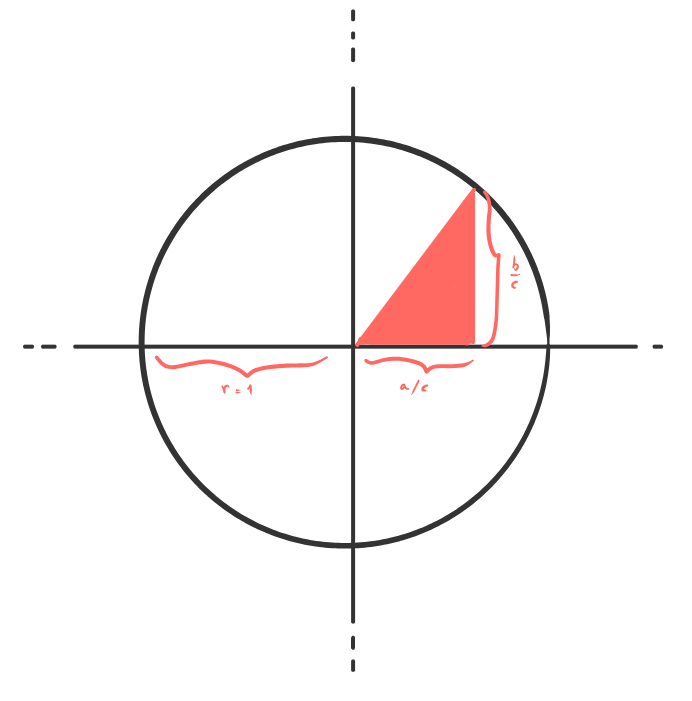
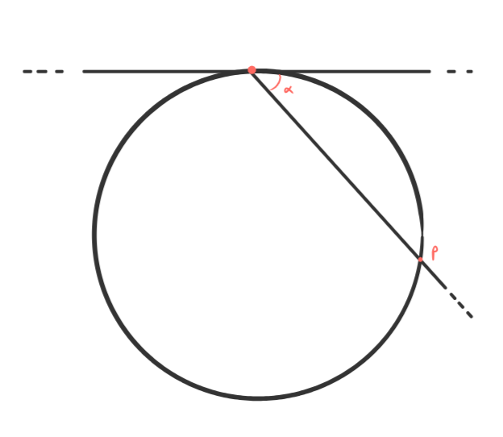

cos'è le terne pitagoriche.
le terne pitagoriche è in breve la manifestazione fisica (o meglio: digitale) del latente e perseverante desiderio di scrivere di musica. È anche la risposta al perenne ed esibizionistico desiderio di parlare di me, o meglio dell'io digitale che si cela dietro tutte queste triple di dischi.
Poche istruzioni sono necessarie per la consumazione del blog: ogni mese cercherò di proporre tre differenti album. Il fil rouge che legherà gli album sarà assolutamente relativo e soggettivo, in parte ispirato alla costruzione delle terne pitagoriche.
cos'è una terna pitagorica.
Un terna pitagorica è una terna di numeri interi positivi (a,b,c) che soddisfano l'equazione del teorema di pitagora: a²+b²=c², ad esempio la terna (3,4,5) costituisce una terna pitagorica in quanto 3²+4²=5². Chiaramente non ogni tripla di numeri interi positivi costituisce una terna pitagorica, in parte questo riflette il fatto, più che auspicabile, che parte dello sforzo di ideazione del blog è quello di trovare affinità (oggettive ed inoppugnabili a volte, soggettive e bizzarre molto spesso) che in un qualche senso leghino i terzetti proposti. Ora se pensate che le terne pitagoriche siano poche, abbiate pazienza di seguirmi ancora un po'...
In una circonferenza di raggio unitario (quella che avreste descritto come x²+y²=1 nel compito di matematica in terzo liceo sperando di prendere almeno 6) ci sono dei punti particolari detti razionali; non è difficile capire perché, sono i punti a coordinate razionali che giacciono sulla circonferenza. Beh non è difficile capire come ogni terna pitagorica sia identificata univocamente ad ognuno di questi punti, un disegno (da me prodotto) potrebbe aiutare a farvi capire come visualizzare questa identificazione, dove la terna (a,b,c) si identifica in...

Ma quanti sono questi punti razionali sulla circonferenza unitaria? Beh, molti. Moltissimi. Pensate che per qualsiasi punto sulla circoferenza unitaria, esiste una successioni di punti razionali che si avvicina arbitrariamente al punto scelto. Un modo per convicersene è quella che i matematici chiamano proiezione stereografica:

ora pensate che finché il coefficente angolare α è razionale, il punto di intersezione p è razionale.
Insomma, dopo questa arringa (veramente non necessaria) avrei voluto convicervi che non ogni terna di interi positivi è pitagorica, ma che comunque le terne pitagoriche sono più di quante possiate pensare. Un modo come un altro per dire esprimere questi ultimi concetti: i terzetti proposti non sono scelti a caso, ma neanche legati inossidabilmente come in una puntata di Sei gradi, ma soprattutto ora lo sapete, sono un noioso matematico.